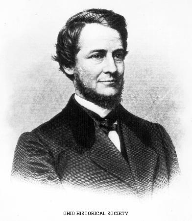
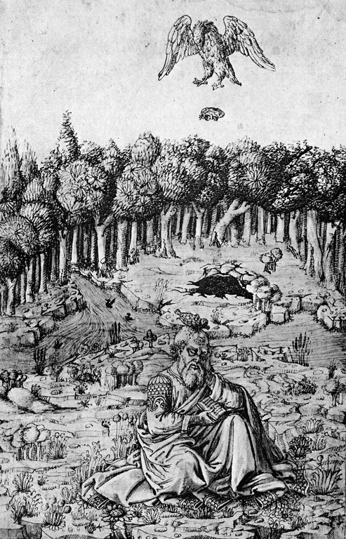
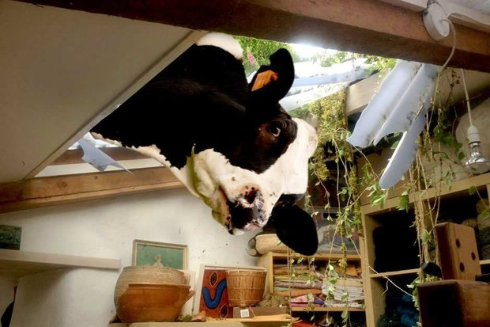

10: Smothered by Gifts
Athens, Greece. c.620 BCE
Draco - Law Maker
Smothered to death by cloaks and hats.
Gift cloaks and hats...
He should have looked the gift horse in the mouth.
|
|
9: The King Who Ate Himself to Death
Sweden. 1771
King Adolf Frederick
Dinner was lobster, caviar, sauerkraut, smoked herring and champagne.
Dessert was 14 servings of hetväg, bowls of semlor and hot milk.
When asked of "The King who ate himself to death", a swedish teenager responded "Which one?".
|
8: Overzealous Demonstration
Ohio, USA. 1871
Clement Vallandigham - Lawyer and Politician
Defending a man charged with murder, he accidentally shot himself.
At the time, he was demonstrating how the victim may have shot himself.
The defendant was cleared of the charges.
|
 |
 |
7: Superlatives
Toronto, Canada. 1993
Garry Hoy
Fell to his death after jumping at a window to show it was unbreakable.
He had preformed the stunt many times before.
Note: the window didn't break, the frame did.
|
6: Human Cockfighting
Tulare County, California, US. 2011
Jose Luis Ochoa
He was stabbed in the leg at an illegal cockfight.
His attacker was a rooster... With a knife....
Interspecies war is bound to ensue.
|
|
| 
|
5: Raining Reptiles
Athens, Greece. 455 BCE
Aeschylus
Killed by a falling turtle dropped by an eagle.
The eagle thought his baldness was a rock.
He was outside to avoid a prophesised death by falling object.
|
4: Ditch Dangers
Newport, Wales. 2012
Geoffery Haywood
Fell into a flooded ditch he didn't see.
Was pretending to be blind for pity.
Who knew the pretend was so real....
|
|
3: The Hazards of Facial Hair
Braunau, Bavairia/Austria. 1567
Hans Steininger
Broke his neck upon tripping over his 4.5 foot beard.
The beard was usually held rolled into a leather pouch.
November and December must be unusually dangerous months.
|
 |
2: Deadly Health food
Croydon, England. 1974
Basil Brown - Health Food Advocate
Died of severe liver damage and vitamin A overdose.
The Culprit - Carrot Juice. 10 gallons in 10 days.
Healthy food is a scam. A deadly one.
|
 |
|  |
1: Bovine Intervention
Caratinga, Brazil. 2013
João Maria de Souza
Crushed to death by a cow, whilst lying in bed next to his wife.
The unforunate bovine came from above (specifically, the roof).
Both cow and wife were unharmed.
|